Flask with Embedded Machine Learning I : Serializing with pickle and DB setup

Machine learning models in web applications include spam detection in submission forms, shopping portals, search engines, recommendation systems for media, and so on.
Throughout the series of articles we'll see how to embed a machine learning model into a web application that not only makes classification but also learns from data in real-time.
Basically, via this series, we can extend our knowledge of machine learning theory. We are going to see how to serialize a model after training and how to load it for later use cases. We also create a SQLite database and create a Flask web application that our movie classifier available to the user.
Because training a machine learning model requires expensive computational resources, we don't want our model to learn the model from the training data all over again.
Fortunately, Python's pickle allows us to serialize and de-serialize object so that we can save our classifier in its current state and reload it if we want to classify new samples without needing to learn the model from the training data again.
In the following code, we create a movieclassifier directory where we will later store the files and data for our web application. Within this movieclassifier directory, we create pkl_objects subdirectory to save the serialized Python objects to our local drive.
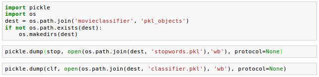Using pickle's dump() method, we then serialized the trained logistic regression model as well as the stop word set from the NLTK library so that we can avoid installing the NLTK vocabulary on our server.
Here is the API definition of the dump() method:
pickle.dump(obj, file, protocol=None, *, fix_imports=True)
The dump() method writes a pickled representation of obj to the open file object file.
In the code, we used the "wb" argument within the open function: ('b') - binary mode for pickle.
Since HashingVectorizer does not need to be fitted, we don't need to pickle it.
Instead, we can create a new Python script file, from which we can import the vectorizer into our current Python session. Here is the code (movieclassifier/vectorizer.py):
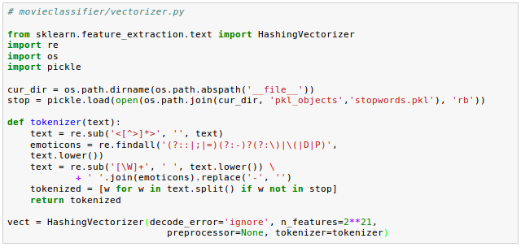Now we have pickled the Python objects, and let's deserialize and test if it is really working.
Now we may want to test if we can deserialize the objects without any error.
Let's restart Jupyter Notebook kernel from a terminal, navigate to the movieclassifier directory, start a new session and execute the following code to verify that we can import the vectorizer and unpickle the classifier:
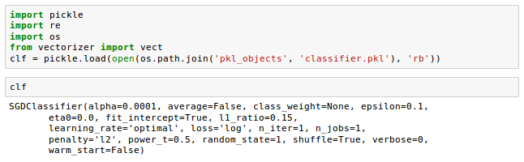Once we have successfully loaded the vectorizer and unpickled the classifier, we can use these objects to pre-process document samples and make predictions about their sentiment.
Since our classifier returns the class labels as integers, we defined a simple Python dictionary to map those integers to their sentiment:
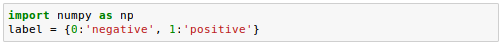We then used the HashingVectorizer to transform the simple example document into a word vector $X$:
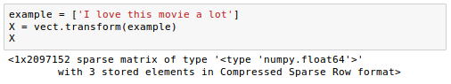Finally, we used the predict method of the logistic regression classifier to predict the class label as well as the predict_proba() method to return the corresponding probability of our prediction.
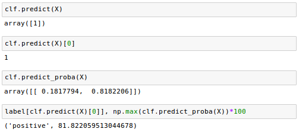Note that the predict_proba() method returns an array with a probability value for each unique class label.
Since the class label with the largest probability corresponds to the class label that is returned by the predict(), we used the np.max() to return the probability of the predicted class.
Here are additional sentiment analysis when we changed the example with more negative comments input to the classification prediction:
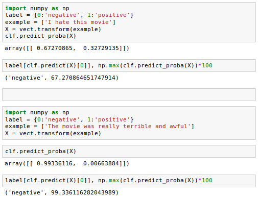Favorable review:
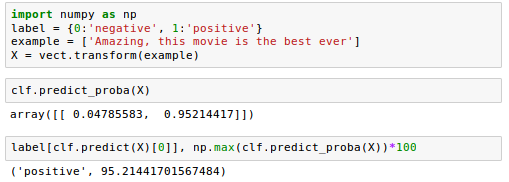Now we want to set up a SQLite database to collect app user's feedback that we can use to update our classification model.
SQLite is a self-contained SQL database engine, and it is ideal for a simple web applications.
There is already an API in the Python standard library, sqlite3, which allows us to work with SQLite databases.
With the following code, we create a connection (conn) to an SQLite database file by calling sqlite3's connect() method, which creates the new database file reviews.sqlite in the movieclassifier directory:
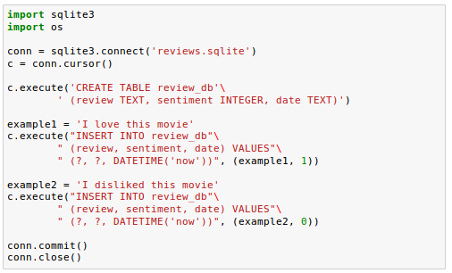Next, we created a cursor via the cursor() method, which allows us to traverse over the database records.
By calling execute(), we created a new database table, review_db. We used this to store and access database entries. We also created three columns in this database table: review, sentiment, and date.
We're using these to store example movie reviews and respective class labels (sentiments).
Using the DATETIME('now') command, we also added date and timestamps to our entries.
In addition to the timestamps, we used the question mark(?) to pass the movie review texts and the corresponding class labels (1 and 0) as positional arguments to the execute() method as members of a tuple.
Finally, we called the commit() to save the changes we made to the database and closed the connection via the close() method.
To check if the entries have been stored in the database table correctly, we need to reopen the connection to the database and use the SELECT command to fetch all rows in the database table that have been committed between the beginning of the Nov.1, 2016 and today:
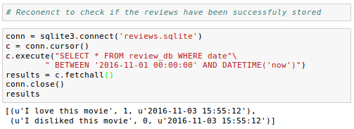We may want to use the free Firefox browser plugin SQLite Manager (https://addons.mozilla.org/en-US/firefox/addon/sqlite- manager/):
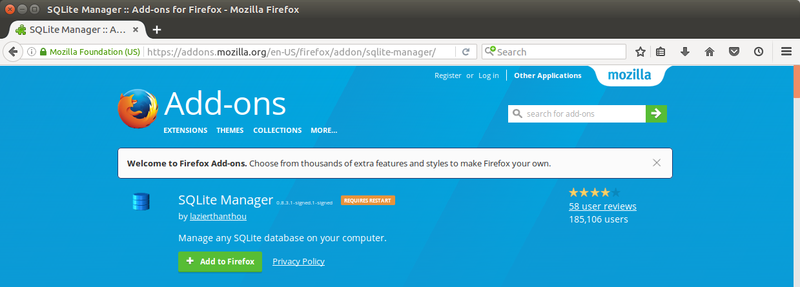After restarting the browser, select "SQLite Manager" under "Tools" topmenu.
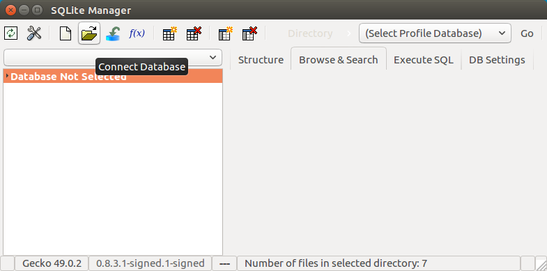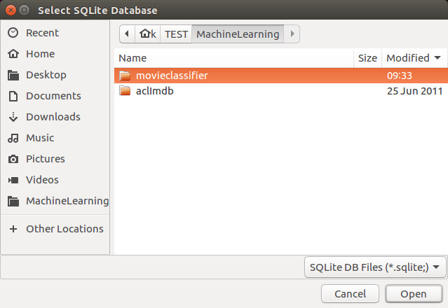
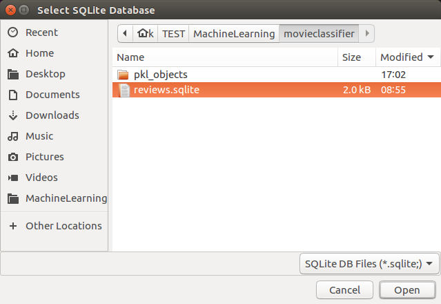

We can access sqlite via shell.
To access our reviews.sqlite:
$ sqlite3 reviews.sqlite
Then, we'll get a sqlite prompt. To list tables, we can type .tables:
sqlite> .tables
To see what's in the table:
sqlite> select * from review_db; I love this movie|1|2016-11-03 15:55:12 I disliked this movie|0|2016-11-03 15:55:12 The movie is the best ever, and the most intriguing film. |1|2016-11-04 16:07:21 The movie is the best ever, and the most intriguing film.|1|2016-11-04 16:37:22 This film served as great entertainment with its colorful cast and numerous plot twists. The gorgeous action scenes and impressive dialogue really held the audience's attention and kept them on the edge of their seats.|1|2016-11-05 05:43:22 This movie is the best ever.|1|2016-11-05 06:13:37 Overall, this is a great movie with a mix of a ton of laughs and a love story all rolled into one. If you're looking for a pick-me-up or to laugh hysterically, this is undoubtedly the movie for you. |1|2016-11-05 19:36:00 sqlite>
To list databases:
sqlite> .databases seq name file --- --------------- ---------------------------------------------------------- 0 main /home/sfvue/MySites/ahaman/reviews.sqlite
We can exit from sqlite with the command Ctrl + D.
Github Jupyter notebook is available from
FlaskAppWithEmbeddedMachineLearningSentimentAnalysis.ipynb
Source is available from ahaman-Flask-with-Machine-Learning-Sentiment-Analysis
Python Machine Learning, Sebastian Raschka
Flask with Embedded Machine Learning II : Basic Flask App
Ph.D. / Golden Gate Ave, San Francisco / Seoul National Univ / Carnegie Mellon / UC Berkeley / DevOps / Deep Learning / Visualization